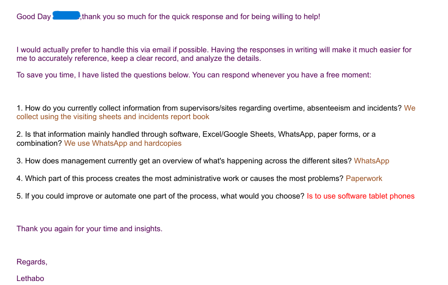
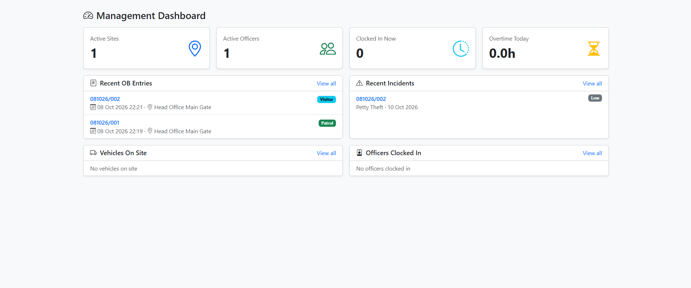
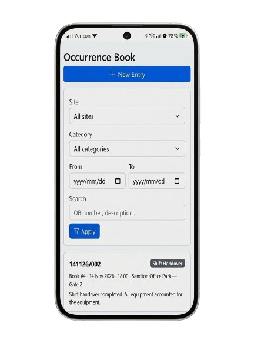
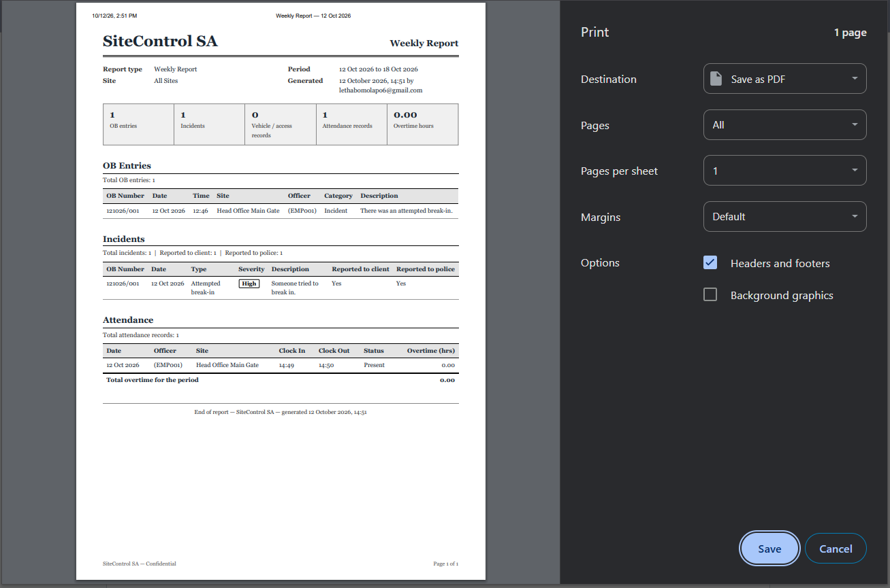

1. The Problem
Security operations rely heavily on physical paper Occurrence Books (OBs) on site. Management had no real-time visibility into shift handovers, incident logs were difficult to audit, and calculating guard overtime at month-end led to costly administrative delays and payroll disputes.

Initial discovery message from the pilot operations manager.
2. The Solution
I engineered a centralized web application that digitizes site logging and automates overtime calculations, complete with client-ready reporting.

Operations Dashboard — Live overview of active sites, shift statuses, and flagged overtime.

Mobile OB Entry — Streamlined interface for on-site guards and supervisors.

Automated PDF Export — Audit-ready shift and overtime summaries for payroll and clients.
3. The Tech Stack
- Backend: Python & Django
- Database: PostgreSQL
- Deployment: Render (Production)
4. The Result
Successfully deployed to production. Delivered a working prototype to a prospective pilot company, eliminating manual OB transcription and streamlining overtime verification.